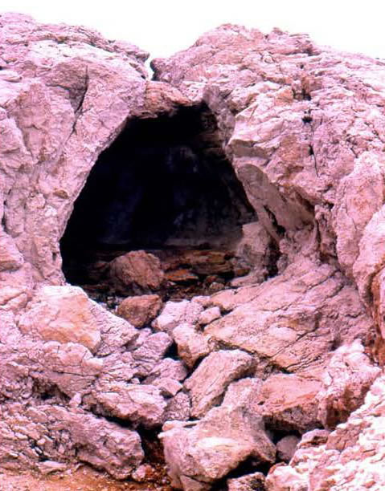

Vous courez récupérer une épée sur un des cadavres proches des tombes, après plusieurs minutes de combat acharné vous arrivez à tuer la bête et à accéder au fond du chemin.
Au bout du chemin vous trouvez un cercle de roche taillé avec au milieu... le grimoire magique !
Vous vous empressez de le récupérer et continuez votre chemin. Au bout du chemin vous sentez un courant d'air venir d'un des 2 chemins. Vous sortez votre briquet et découvrez que c'est celui de gauche qui dégage ce courant d'air mais qu'il pue énormément.
Dans l'autre chemin vous ne sentez rien de particulier.
Lequel choisissez-vous ?

